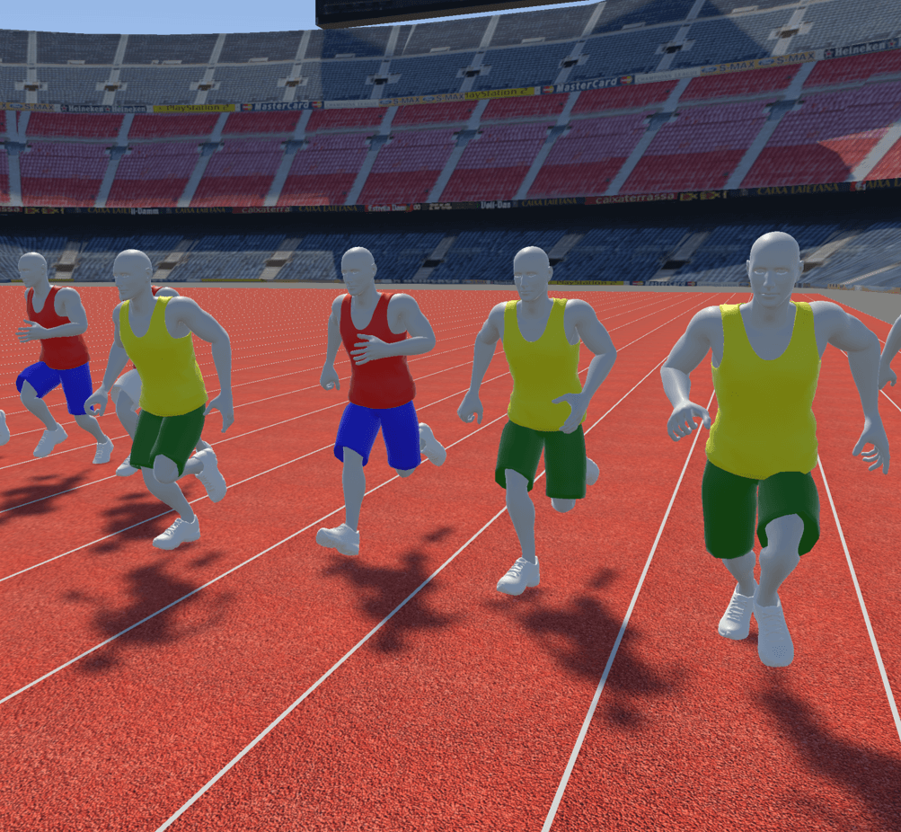

Data Visceralization: Enabling Deeper Understanding of Data Using Virtual Reality

Venue. VIS (2020)
Authors. Benjamin Lee, Dave Brown, Bongshin Lee, Christophe Hurter, Steven Drucker, Tim Dwyer
Abstract. A fundamental part of data visualization is transforming data to map abstract information onto visual attributes. While this abstraction is a powerful basis for data visualization, the connection between the representation and the original underlying data (i.e., what the quantities and measurements actually correspond with in reality) can be lost. On the other hand, virtual reality (VR) is being increasingly used to represent real and abstract models as natural experiences to users. In this work, we explore the potential of using VR to help restore the basic understanding of units and measures that are often abstracted away in data visualization in an approach we call data visceralization. By building VR prototypes as design probes, we identify key themes and factors for data visceralization. We do this first through a critical reflection by the authors, then by involving external participants. We find that data visceralization is an engaging way of understanding the qualitative aspects of physical measures and their real-life form, which complements analytical and quantitative understanding commonly gained from data visualization. However, data visceralization is most effective when there is a one-to-one mapping between data and representation, with transformations such as scaling affecting this understanding. We conclude with a discussion of future directions for data visceralization.
Honourable Mention Award